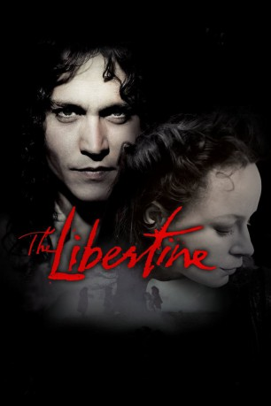
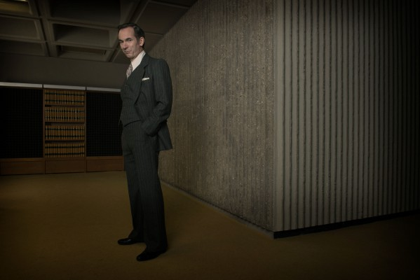
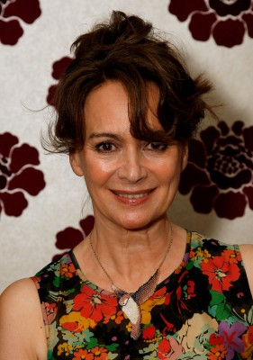
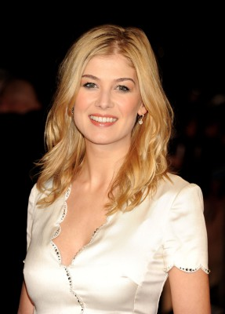
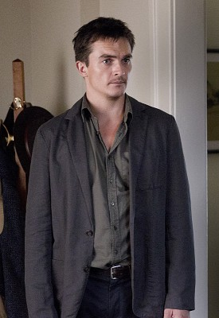
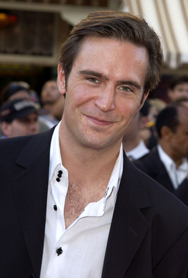
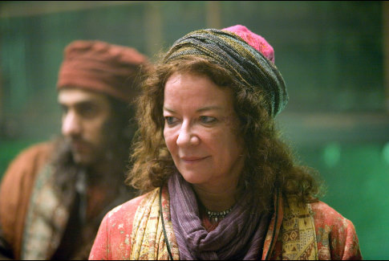
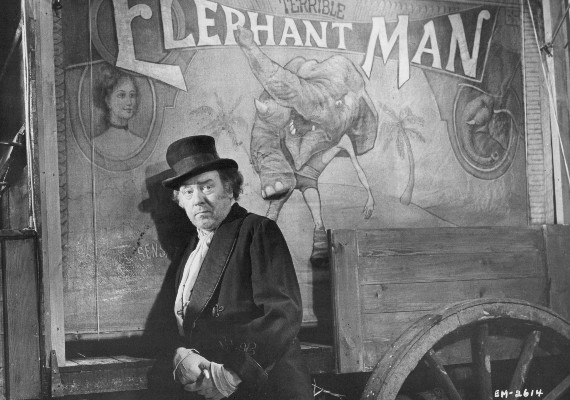
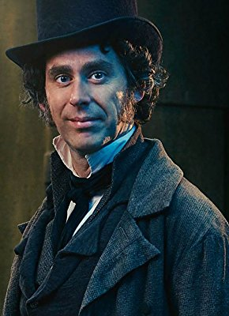
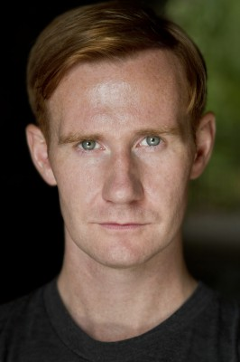

#10673 The Libertine - Sex, Drugs & Rococo
Alternativ: The Libertine (Englischer Titel)
 
 IMDB-Wertung: 6.4 / 10
IMDB-Wertung: 6.4 / 10  Metascore: 44
Metascore: 44 
Der Earl of Rochester ist kein angenehmer Mensch: Er hasst sein Leben, trinkt wie ein Loch, gebraucht Frauen und fühlt sich allen anderen überlegen - alles ist ihm egal, denn erste Anzeichen von Syphilis stärken ihn in der Annahme, er habe nicht mehr lange zu leben. Überheblich lässt er sich auf eine Wette ein, er könne jede x-beliebige Schauspielerin groß herausbringen - und schaufelt sich damit sein eigenes Grab. Denn jene Elizabeth ist es, die den Earl nach Erreichen ihrer Ziele fallen lässt.
Jahr: 2004
Dauer: 114 Minuten
FSK: 16
Land: England Studio: Koch MediaTonspuren: DTS - ,
Untertitel: Deutsch,
Auflösung: 1080p (1920x816) Größe: 10055 MB
Genre: Drama, Liebe, Geschichte, Biographie
Regisseur: Laurence Dunmore
Drehbuch: Stephen Jeffreys, Stephen Jeffreys
Soundtrack: Michael Nyman
Darsteller:
 Johnny Depp als Rochester
Johnny Depp als Rochester-  Paul Ritter als Chiffinch
 John Malkovich als Charles II
John Malkovich als Charles II- Stanley Townsend als Keown
-  Francesca Annis als Countess
-  Rosamund Pike als Elizabeth Malet
- Tom Hollander als Etherege
- Johnny Vegas als Sackville
- Richard Coyle als Alcock
- Tom Burke als Vaughan
-  Rupert Friend als Downs
- Kelly Reilly als Jane
-  Jack Davenport als Harris
- Trudi Jackson als Rose
- Samantha Morton als Elizabeth Barry
-  Clare Higgins als Molly Luscombe
-  Freddie Jones als Betterton
-  Robert Wilfort als Huysmans
- Jake Curran als Sackville's Servant
- Paul Chahidi als Barrillon
- Kevin Doyle als Constable
- Morgan Walters als Trooper
- Peter Howell als Bishop
- T.P. McKenna als Black Rod
- Maimie McCoy als Acting Troop
- Richard Cotton als Acting Troop
- Cara Horgan als Acting Troop
-  Laurence Spellman als Acting Troop
 Sacha Bennett als King Charles II's Servant (uncredited)
Sacha Bennett als King Charles II's Servant (uncredited)- Shane MacGowan als 17th Century Bard (uncredited)
- Monroe Robertson als Royal Servant (uncredited)
- Hugh Sachs als Ratcliffe
- Niall Buggy als Chaplain
- Penny Layden als Acting Troop
- Olivia Higginbottom als Acting Troop
- Amy Darcy als Acting Troop
- Graham Hughes als Acting Troop
- Liam McKenna als Acting Troop
- Habib Nasib Nader als Acting Troop
- Robert Sterne als Acting Troop
- Katie Beale als Dancer
- Anna Serena Bindra als Dancer
- Fleur Davidson als Dancer
- Natascha Falter als Dancer
- Hannah Gould als Dancer
- Alice Hutcheson als Dancer
- Harriette Quarrie als Dancer
- Susie Valerio als Dancer
- Louisa Bawden als Orange Seller (uncredited)
- Amanda Girvan als Prostitute (uncredited)
Datei: X:\2004(G-M)\Libertine - Sex, Drugs & Rococo, The (2004, FSK16, 1920x816).mkv seit 16.02.2019
Festplatte: HD 2003-2004-2005(A-F)
 Es gibt insgesamt 41 Filme in der Gruppe '2004(G-M)'
Es gibt insgesamt 41 Filme in der Gruppe '2004(G-M)'